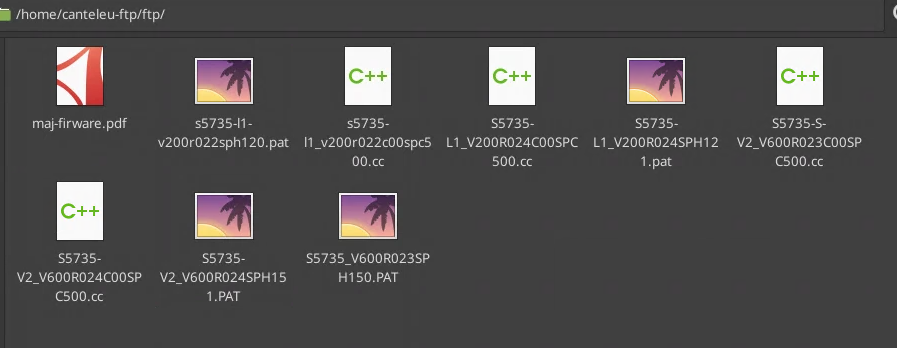
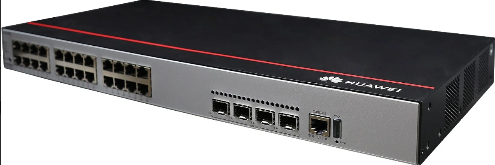

Mettre à jour les switchs Huawei pour fiabiliser l'infrastructure réseau et uniformiser les versions firmware.
Mise à jour firmware des switchs Huawei
Projet d'entreprise de maintenance préventive réalisé sur plusieurs jours afin de fiabiliser le réseau, corriger les anomalies et homogénéiser les versions des équipements.
Contexte
Ce projet a été réalisé en entreprise dans un contexte de maintenance réseau. L'objectif était de mettre à jour les firmwares de plusieurs switchs Huawei afin de garder une infrastructure stable, homogène et sécurisée, tout en limitant l'impact pour les collaborateurs.
L'intervention s'est déroulée sur plusieurs jours, car certains switchs ne pouvaient pas être redémarrés en journée sans perturber l'activité. Les redémarrages les plus sensibles ont donc été planifiés le soir, au moment d'une coupure électrique déjà prévue.
Préparer les fichiers, vérifier les versions, transférer les firmwares et organiser les redémarrages selon les contraintes de production.
Des switchs mis à jour progressivement, avec des redémarrages planifiés pour limiter l'impact sur les utilisateurs.
Projet entreprise de maintenance et de fiabilisation réseau.
3 jours d'intervention planifiés autour des contraintes de disponibilité du réseau.
Estimation fictive de 252,42 EUR bruts en temps humain (1 personne x 3 jours x 7 h x 12,02 EUR), avec les équipements et fichiers firmware existants de l'entreprise.
6 octobre 2026.
8 octobre 2026, avec finalisation lors d'une coupure électrique prévue en soirée.
Travail réalisé
- Préparation d'un serveur FTP avec les firmwares validés.
- Vérification des versions déjà présentes sur les équipements.
- Sauvegarde de la configuration avant intervention.
- Organisation de l'intervention selon les contraintes de disponibilité des services.
- Transfert des images vers les switchs Huawei.
- Redémarrage contrôlé après mise à jour, lorsque l'impact utilisateur était acceptable.
- Planification de certains redémarrages en soirée pendant une coupure électrique prévue.
- Tests de connectivité, VLAN, uplinks et supervision.
Difficultés et points d'attention
- Bien préparer l'opération pour éviter tout impact important sur la disponibilité du réseau.
- Vérifier la compatibilité de la version firmware avec le matériel concerné.
- Conserver une sauvegarde exploitable pour sécuriser l'intervention.
- Éviter les redémarrages en journée sur les switchs utilisés par les collaborateurs.
- Profiter d'une coupure électrique planifiée pour effectuer les redémarrages les plus sensibles.
Schémas et captures


Compétences BTS SIO SISR mobilisées
- Maintenir en conditions opérationnelles des équipements réseau.
- Préparer, exécuter et vérifier une opération technique sur infrastructure.
- Participer à la fiabilisation et à la sécurisation du système d'information.